Manuale software D-MES
Una pubblicazione di Donatoni Macchine S.r.l.
Versione Software: 2.0.3.0
Versione Manuale: 1.0
Data: 06/08/2026
Generalità
Le informazioni contenute in questo documento sono applicabili solamente alle versioni software riportate nel frontespizio.
È possibile che non tutte le funzioni esplicabili dal prodotto siano descritte nella presente documentazione; in questi casi Donatoni macchine non è, comunque, obbligata, a garantire queste funzioni né a preservarle nelle future versioni.
Scopo del manuale
Questo manuale riporta le istruzioni d’utilizzo necessarie per la buona conoscenza del programma DMes e informazioni utili per trovare soluzioni a malfunzionamenti.
La DONATONI MACCHINE SRL, è comunque a disposizione per assicurare una pronta ed accurata assistenza tecnica e tutto quanto può essere utile per il miglior funzionamento ed ottenere il massimo della resa dal DMes.
La Ditta Sviluppatrice, si riserva il diritto di modificare, a propria discrezione, la presente pubblicazione ed i dati in essa contenuti qualora lo ritenesse necessario per un miglioramento tecnico o commerciale del prodotto.
Il software Donatoni MES (DMES) consente di avere una gestione semplificata della produzione, fino a alla versione completa della gestione delle fasi produttive dell’azienda.
DMES CORE
DONATONI DMES CORE rappresenta il pacchetto base del sistema DMES, progettato per offrire fin da subito un controllo completo, semplice e centralizzato del processo produttivo.
È la soluzione ideale per iniziare a digitalizzare la propria fabbrica, con strumenti concreti per migliorare l’organizzazione, la tracciabilità e la produttività.

DMES TRACE
DONATONI DMES TRACE è il pacchetto completo per la gestione digitale della produzione, che integra tutte le funzionalità base e aggiunge strumenti avanzati per la personalizzazione e stampa delle etichette.
Una soluzione pensata per offrire un controllo totale sulla produzione e una tracciabilità precisa e professionale dei pezzi, dal progetto alla spedizione.

DMES MATRIX
DONATONI DMES MATRIX è una piattaforma avanzata che unisce tutte le funzionalità di DMES TRACE con un potente modulo operativo dedicato alla gestione delle lastre.
È la soluzione ideale per chi vuole un controllo totale sull’intero ciclo produttivo, dalla pianificazione all’etichettatura dei pezzi, fino all’organizzazione delle lastre da lavorare.

DMES PRO
DONATONI DMES PRO è il pacchetto più completo e strutturato dell’intera suite DMES. Unisce in un’unica piattaforma tutte le funzionalità del pacchetto MATRIX, arricchendole con strumenti evoluti per la gestione delle commesse, dei cicli di lavoro e dell’intero processo produttivo aziendale.
Con DMES PRO non ti limiti a monitorare le macchine o gestire le lastre: hai a disposizione un sistema integrato per pianificare, controllare, assegnare, tracciare e documentare ogni fase del lavoro, dalla ricezione dell’ordine alla consegna del pezzo finito. È pensato per aziende che vogliono digitalizzare e ottimizzare ogni anello della catena produttiva, aumentando l’efficienza e migliorando il servizio al cliente.
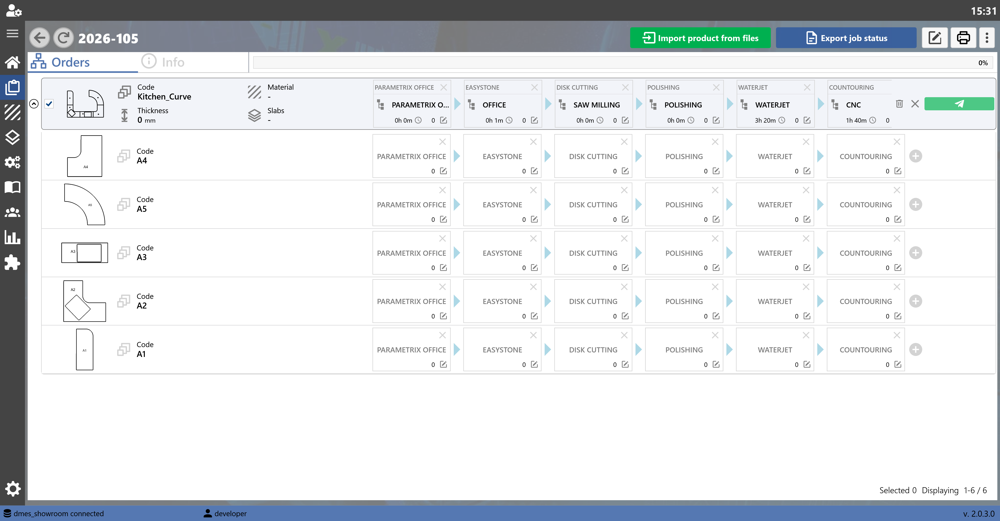
Questo software MES consente di gestire e controllare le principali fasi di lavorazione di una lastra. L’operatore può seguire il processo dalla fase iniziale di taglio fino alle operazioni finali di rifinitura e lucidatura.
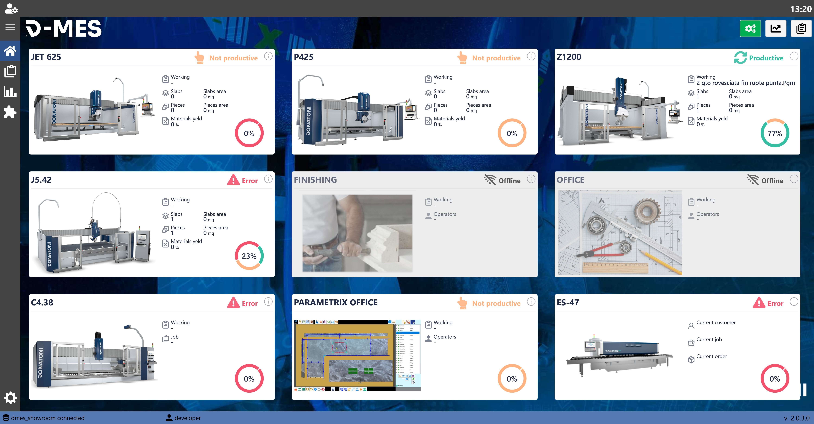
BARRA LATERALE
Il menu laterale è collocato a sinistra e consente di navigare tra le diverse pagine del programma.
PULSANTI
MENU' | |
 | HOME |
PRODUZIONE | |
 | STATISTICHE |
 | TOOLS |
SCHEDA MACCHINA
In questa sezione vengono riepilogate le statistiche di produzione e lo stato operativo della macchina in tempo reale.
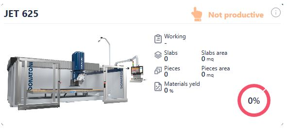
STATI DELLA MACCHINA
STATO OFFLINE | |
 | STATO PRODUCTIVE |
 | STATO NOT PRODUCTIVE |
 | STATO ERROR |
SCHEDA MACCHINA STATISTICHE
La card Stato e Statistiche Macchina fornisce un riepilogo in tempo reale sulle performance del macchinario.

Grafico ad anello | Fornisce un feedback visivo immediato che rappresenta la percentuale di avanzamento della commessa corrente |
Nella pagina Home è possibile consultare informazioni aggiuntive sulla macchina selezionata
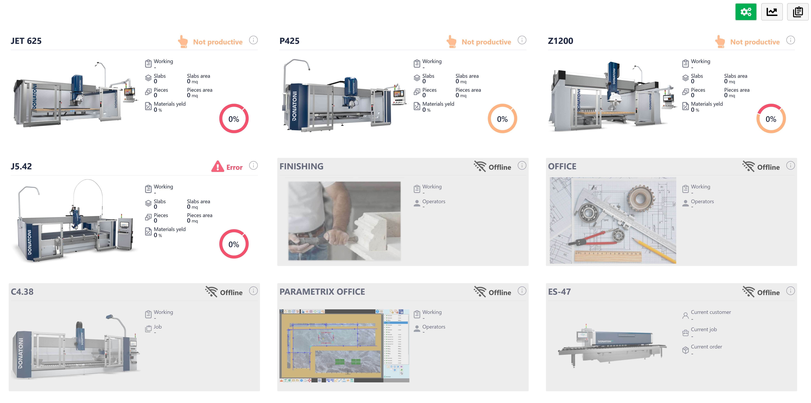
INFORMAZIONI MACCHINA
PAGINA INFO
INFO |
Dopo aver premuto il pulsante Info, si apre una schermata simile a questa:
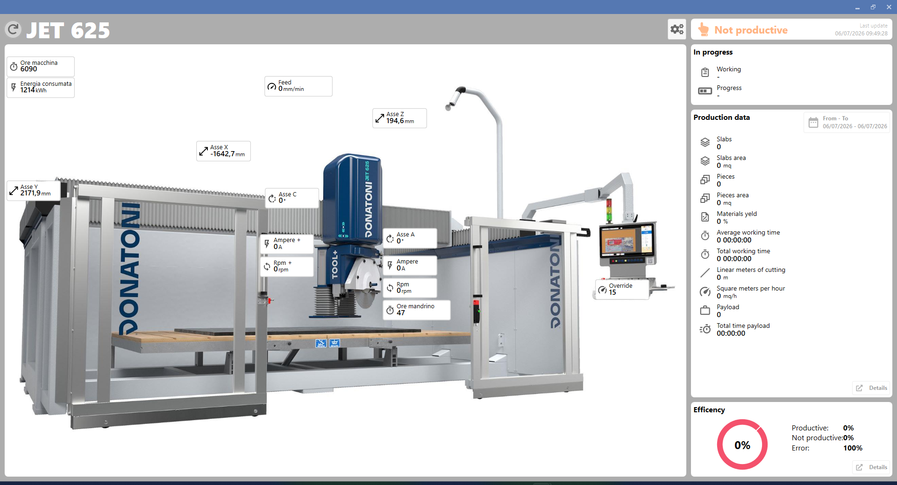
In questa pagina sono disponibili informazioni dettagliate sulle lavorazioni della macchina.
PULSANTI
DATA | |
 | DETTAGLI |
IMPOSTAZIONI |
STATISTICHE DI LAVORO
Questa sezione mostra le statistiche di lavoro della macchina.

PULSANTI
CATEGORIA | |
SLABS | |
AGGREGAZIONE |
STATISTICHE CICLI DI LAVORO
Questa sezione mostra le statistiche dei cicli di lavoro della macchina.

STATISTICHE SULL’EFFICIENZA DELLA MACCHINA
Questa schermata fornisce un'analisi dettagliata dell'efficienza e dello stato della macchina, mostrando la ripartizione del tempo operativo tra periodi produttivi, non produttivi ed errori in un arco temporale selezionato.

In questa pagina puoi gestire le fasi di produzione dei file da inviare alla macchina tramite il MES.

GUIDA
Dopo aver aggiunto un file .dxf con il pulsante Nuovo, il file compare nella schermata principale, come mostrato nell’immagine.

Per inviare il file alla macchina, clicca sul pulsante Invio e conferma con OK nella finestra che si apre. Verifica poi che lo stato passi da Ready a Sended.
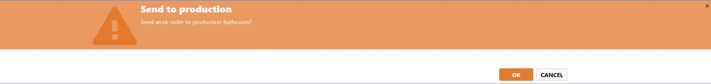
PULSANTI
 | INVIO |
 | STATISTICHE |
 | NUOVO Aggiunge un nuovo file .dxf alla lista. |
 | STATO READY Indica che il file è pronto per essere inviato in produzione. |
STATO SENDED Indica che il file è stato inviato correttamente alla macchina. |
Questa pagina mostra le statistiche delle lavorazioni eseguite dalle macchine collegate al MES.

CATEGORIE
La pagina principale offre due pulsanti per accedere alle sotto-pagine delle statistiche desiderate.
REPORT | |
WORKING |
REPORT
Questa pagina mostra i report disponibili per ogni lavorazione.
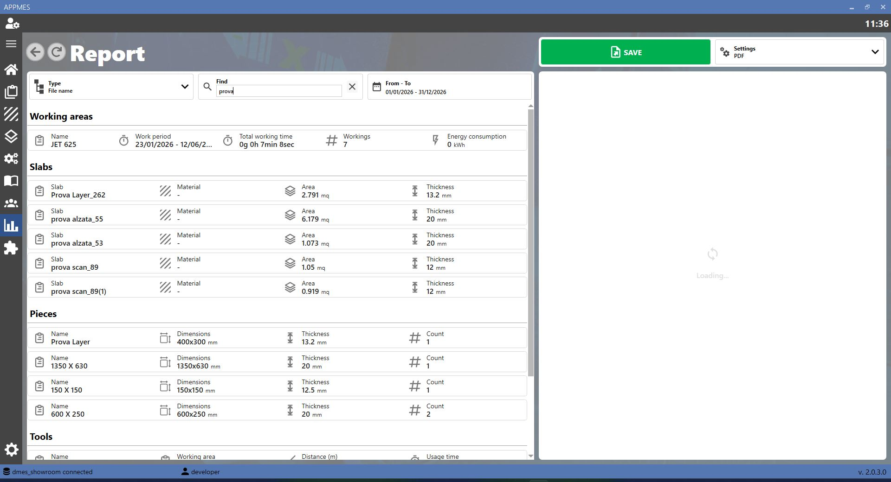
PULSANTI
TYPE | |
DATA | |
SAVE | |
SETTINGS | |
AUMENTO ZOOM | |
 | DIMINUZIONE ZOOM |
RIPRISTINO ZOOM |
LAVORAZIONE
Questa sezione mostra le statistiche dei cicli di lavoro registrati dal MES.
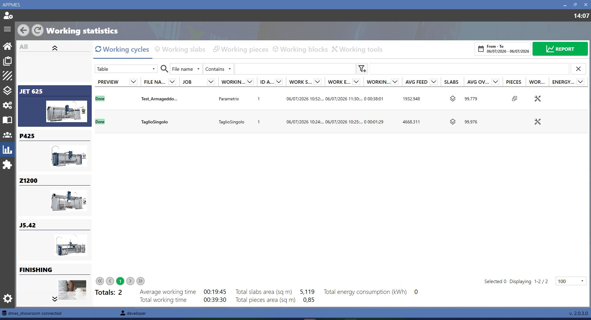
REPORT | |
DATA |
CICLI DI LAVORAZIONE
Questa sezione mostra le statistiche dei cicli di lavoro della macchina selezionata.
LAVORAZIONE SLABS
Questa sezione mostra le statistiche delle lastre lavorate.
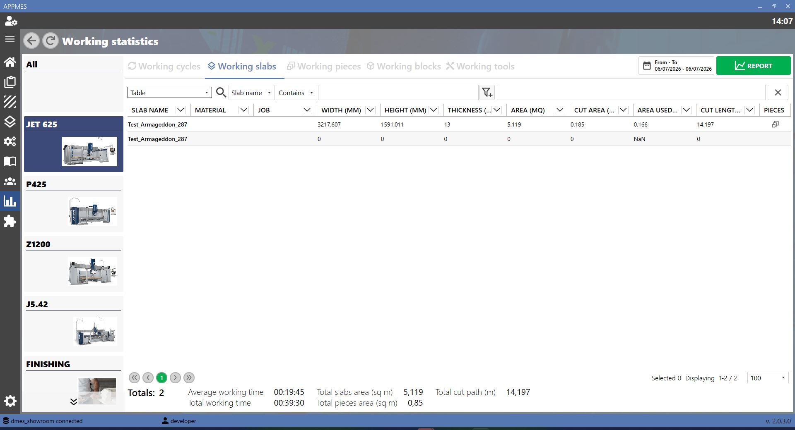
LAVORAZIONE PEZZI
Questa sezione mostra le caratteristiche dei pezzi lavorati.

LAVORAZIONE BLOCCHI
Questa sezione mostra le statistiche dei blocchi lavorati.
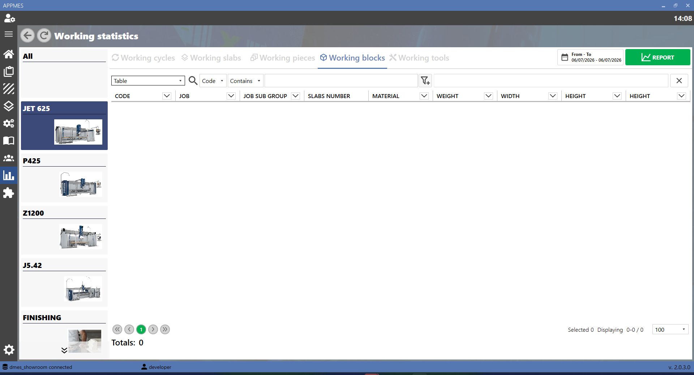
STRUMENTI DI LAVORAZIONE
Questa sezione mostra le statistiche degli utensili usati nei cicli di lavoro.

Questa pagina del MES permette di consultare e modificare gli strumenti usati dalle macchine.
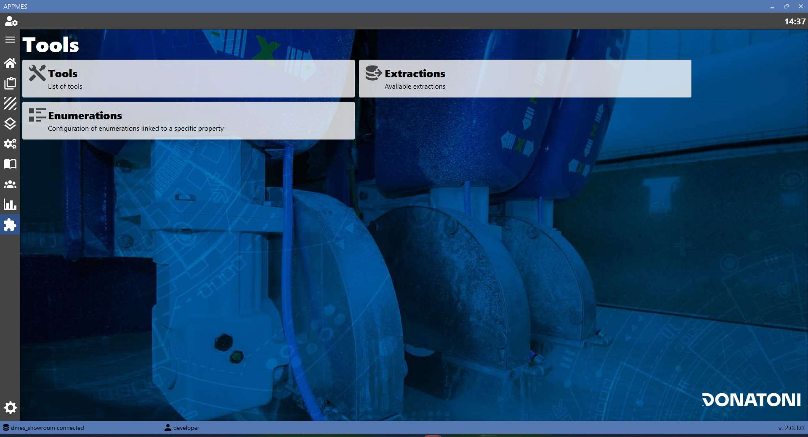
PULSANTI
UTENSILI | |
ESTRAZIONI | |
ENUMERAZIONI |
UTENSILI
Questa sezione mostra i dati degli strumenti associati alla macchina selezionata.
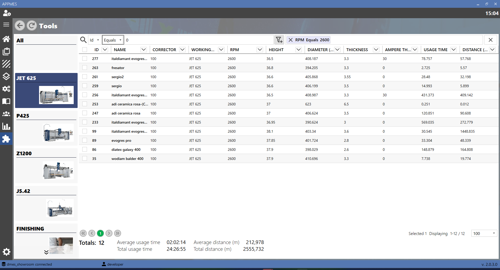
PULSANTI
Questi pulsanti permettono di filtrare la ricerca degli utensili in base a condizioni specifiche.
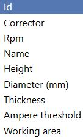 | CARATTERISTICHE Seleziona la caratteristica da usare per il filtro, ad esempio ID, correttore, RPM, nome, altezza, diametro, spessore, soglia di corrente o area di lavoro. |
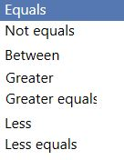 | CONDIZIONI |
FILTRI | |
RIMOZIONE FILTRI |
ESTRAZIONI
Questa sezione permette di estrarre dal server i dati gestiti dal MES.

PULSANTI
RUN | |
-20260819-054922.png) | CONFERMA |
 | CANCELLA |
ESTRAZIONE AVVENUTA
Al termine dell’estrazione, se l’operazione è riuscita, si apre una pagina simile a questa.

Cliccando su More options si apre una scheda in cui è possibile modificare la dimensione del font, il formato del foglio, l’orientamento della pagina e la presenza del logo.

Con DMES TRACE è possibile tenere traccia delle fasi di lavorazioni di ogni pezzo
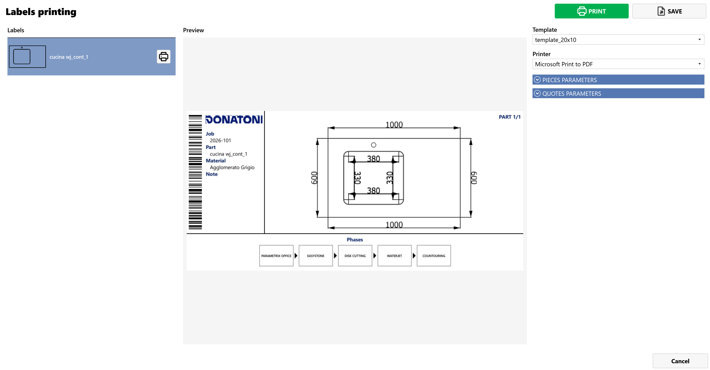
Per creare una nuova lavorazione in questo software MES, premere il pulsante NEW. Si aprirà una schermata in cui inserire le informazioni necessarie per registrare e gestire la lavorazione.
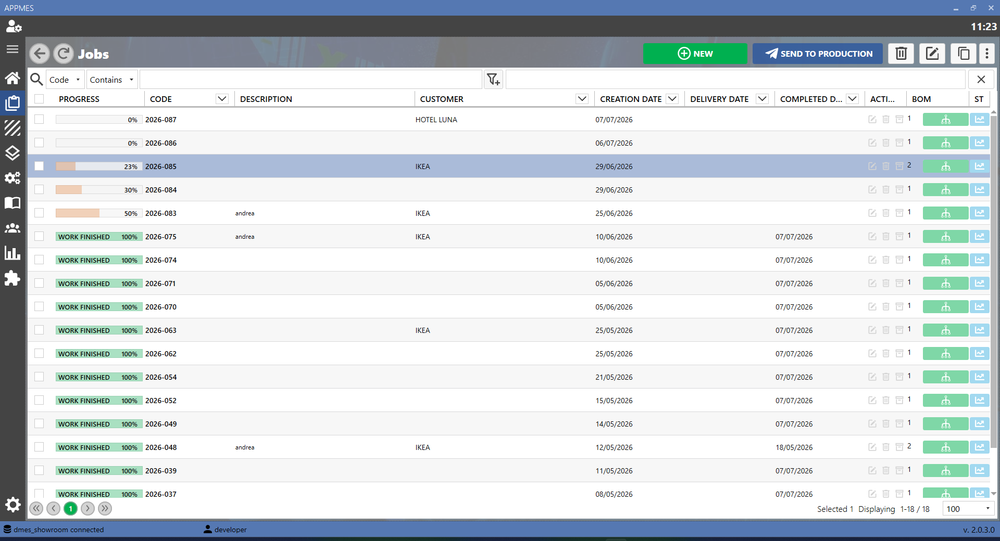
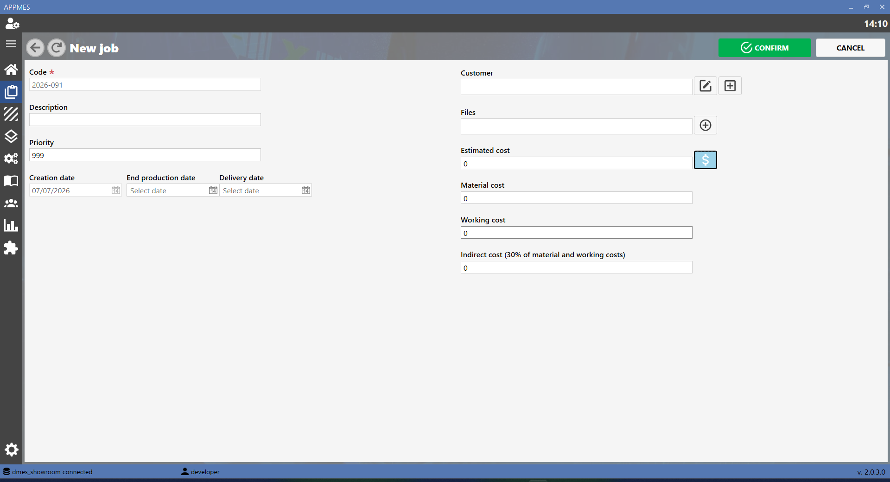
PULSANTI
 | AGGIUNGI |
 | MODIFICA |
 | COPIA |
ELIMINA | |
 | SELECT CONTACT |
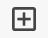 | NUOVO CLIENTE |
COSTI EXTRA | |
 | GESTIONE FASI |
 | MENU OPZIONI |
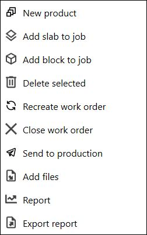 | MENU OPZIONI CREAZIONE |
In questa pagina è possibile gestire tutte le fasi di lavorazione dei pezzi all’interno del MES. Il MES è il software che permette di seguire l’avanzamento della produzione, dalla creazione o importazione dei pezzi fino alla stampa delle etichette e all’invio in produzione

PULSANTI
Import | |
Export | |
 | Menu opzioni |
 | Modifica |
Stampa | |
 | Invio |
STATI DELLA LAVORAZIONE
Verde | Indica che la fase di lavorazione è stata completata |
Azzurro | Indica che la fase di lavorazione deve ancora iniziare |
Giallo | Indica che la fase di lavorazione è stata presa in carico ed è in gestione |
IMPORTAZIONE PEZZI
Per importare i pezzi, fare clic sul pulsante Import. Si aprirà una schermata simile a quella mostrata di seguito.

Premere OK nella schermata successiva. Al termine, verificare che tutti i pezzi siano stati aggiunti correttamente alla lavorazione.


ESPORTAZIONE DEGLI STATI DI LAVORO
Per esportare gli stati di una lavorazione, premere il pulsante Export. Si aprirà una schermata simile a quella mostrata di seguito, nella quale è possibile scegliere o modificare le informazioni da esportare

STAMPA ETICHETTE
Per stampare un’etichetta per l’intera lavorazione, premere il pulsante Stampa. Si aprirà una schermata simile a quella mostrata di seguito.

STAMPA ETICHETTE PER UNA FASE DI UNA LAVORAZIONE
Per stampare un’etichetta per una singola fase di lavorazione, fare clic con il tasto destro del mouse sulla fase desiderata e selezionare la voce Labels printing. Si aprirà una schermata simile a quella mostrata di seguito. Selezionare quindi il pezzo per cui si vuole stampare l’etichetta

NUOVO PRODOTTO
Per aggiungere un nuovo prodotto alla lavorazione, fare clic sui tre puntini e selezionare la voce New product. Si aprirà una schermata simile a quella mostrata di seguito.

PULSANTI NUOVO PRODOTTO
Aggiungi | |
 | Sposta sopra |
Sposta sotto |
In questa pagina è possibile visualizzare le informazioni principali della lavorazione e l’anteprima del file .dxf importato. Il file .dxf contiene il disegno tecnico che il MES utilizza per supportare la gestione e il controllo della lavorazione.

PULSANTI
Aumenta zoom | |
 | Riduci zoom |
Ripristina zoom | |
 | Cambia sfondo |
-20260819-060407.png) | Modifica anteprima |
Per stampare un’etichetta per una singola fase di lavorazione, fare clic con il tasto destro del mouse sulla fase desiderata e selezionare la voce Labels printing. Si aprirà una schermata simile a quella mostrata di seguito. Selezionare quindi il pezzo per cui si vuole stampare l’etichetta.
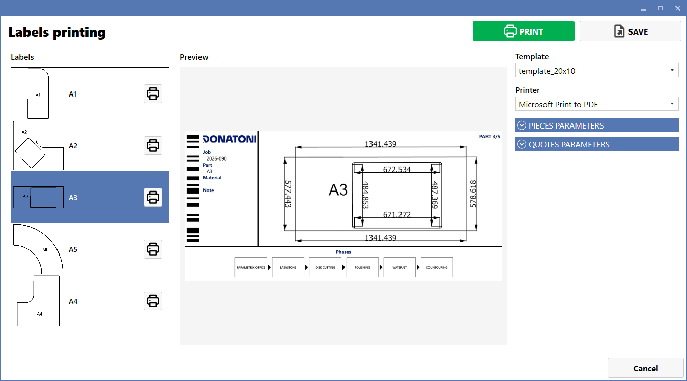
PIECES PARAMETERS
Il pannello PIECES PARAMETERS permette di configurare i parametri grafici e di visualizzazione dei pezzi e delle geometrie sul layout di lavorazione, regolando distanze, spessori, testi e colori
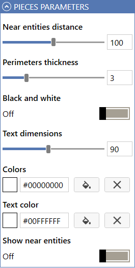
OPZIONI PIECES PARAMETERS
Distanza entità vicine | Regola la distanza minima di tolleranza o prossimità tra le diverse entità o geometrie sul piano di lavoro. |
Spessore perimetri | Imposta lo spessore delle linee che definiscono i contorni e i perimetri dei pezzi visualizzati a schermo. |
Modalità Bianco e Nero | Interruttore (On/Off) per attivare la visualizzazione monocromatica dell'interfaccia grafica o del disegno. |
Dimensione del testo | Modifica la grandezza dei caratteri per le etichette di testo e le quote informative associate ai pezzi. |
Colore dei pezzi | Consente di definire il colore del perimetro o del riempimento dei pezzi tramite codice esadecimale o selettore grafico. |
Colore del testo | Permette di scegliere la tonalità del testo informativo sovrapposto ai pezzi (es. identificativi o misure). |
Mostra entità vicine | Attiva o disattiva l'evidenziazione visiva delle geometrie o dei pezzi che si trovano in prossimità tra loro. |
QUOTES PARAMETERS
Il pannello QUOTES PARAMETERS consente di gestire e configurare i parametri di generazione, stile e posizionamento delle quotature grafiche all'interno del layout di lavorazione.
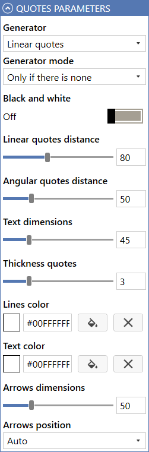
OPZIONI QUOTES PARAMETERS
Tipo di generatore | Menu a tendina per selezionare la tipologia di quotature automatiche da applicare |
Modalità di generazione | Definisce la logica di inserimento delle quote |
Modalità Bianco e Nero | Interruttore (On/Off) per forzare la visualizzazione delle quote in bianco e nero anziché a colori. |
Distanza quote angolari | Regola tramite cursore la distanza visiva delle linee di quota lineari rispetto al profilo del pezzo. |
Distanza quote angolari | Regola tramite cursore lo spazio e il posizionamento delle quote relative agli angoli sul disegno. |
Dimensione del testo | Imposta la grandezza dei caratteri numerici e dei testi delle quotature per garantirne la leggibilità. |
Spessore linee di quota | Modifica lo spessore grafico delle linee e dei tratti che compongono la quotatura. |
Colore delle linee | Permette di scegliere la tinta delle linee di quota e di riferimento tramite tavolozza o codice colore esadecimale. |
Colore del testo | Consente di definire il colore specifico per i testi e i valori numerici delle quote. |
Dimensione delle frecce | Regola la grandezza delle frecce o dei terminali posti alle estremità delle linee di quota. |
Posizionamento frecce | Menu a tendina per impostare dove collocare le frecce (es. in automatico, interne o esterne alla linea di quota). |
In questa pagina del MES è possibile gestire l’anagrafica di clienti e fornitori. Da qui l’utente può accedere alle aree dedicate per creare, consultare o aggiornare le informazioni principali.
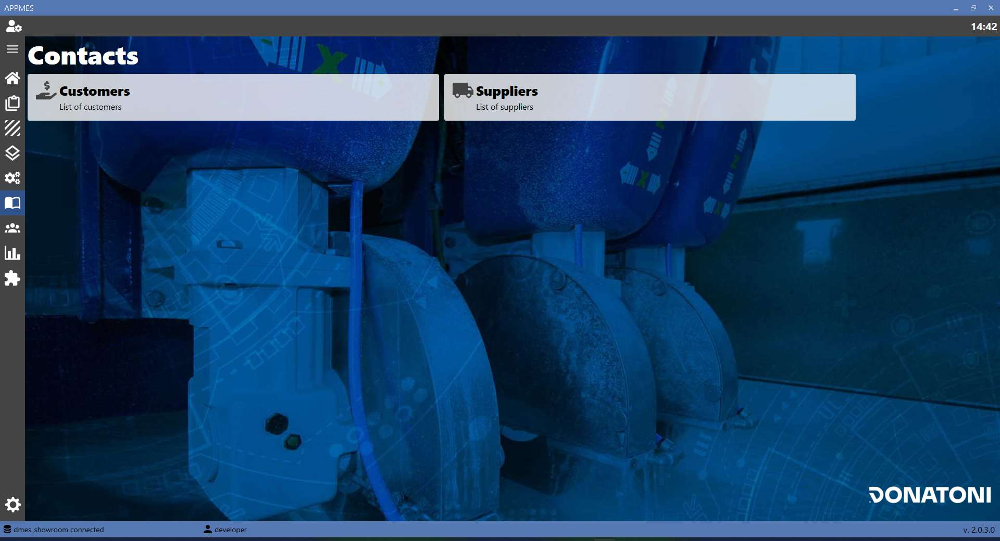
Pulsanti
Customers | |
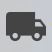 | Suppliers |
In questa pagina del MES è possibile gestire l’anagrafica dei clienti. L’utente può creare nuovi clienti, modificare quelli già presenti, copiarli, eliminarli e associare un’immagine di anteprima.
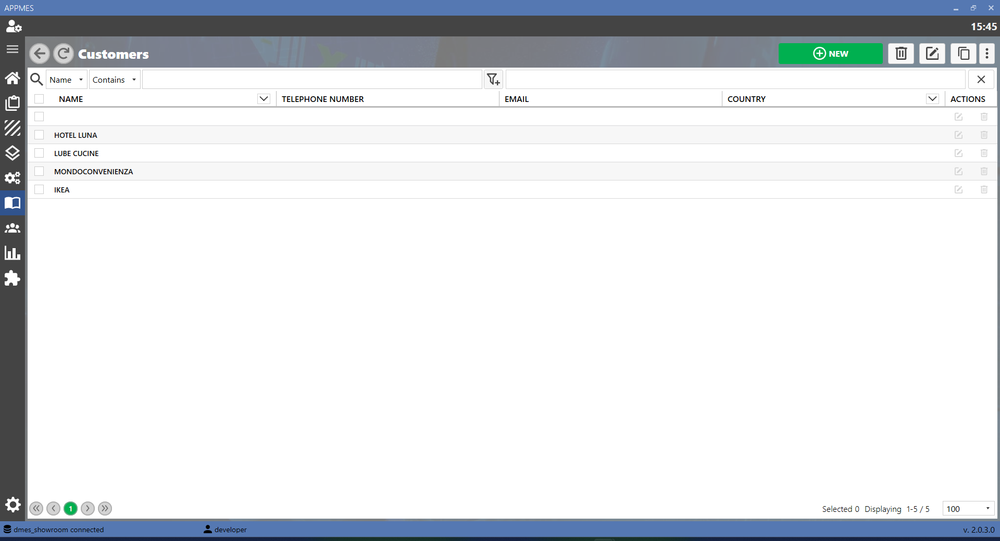
PULSANTI
 | AGGIUNGI |
-20260819-060407.png) | MODIFICA Consente di aggiornare i dati di un cliente già registrato nel MES. |
 | COPIA Consente di duplicare la scheda di un cliente già presente, così da creare un nuovo cliente partendo da dati esistenti. |
 | ELIMINA Consente di rimuovere dal MES la scheda di un cliente non più necessaria. |
 | IMMAGINI Consente di associare un’immagine di anteprima alla scheda cliente durante la creazione o la modifica. |
CREAZIONE DI UN NUOVO CLIENTE
Per creare un nuovo cliente, fare clic sul pulsante AGGIUNGI. Il MES apre una schermata in cui inserire i dati del cliente.
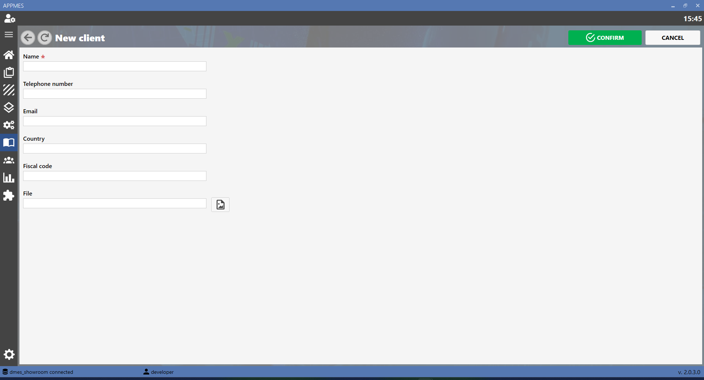
In questa pagina del MES è possibile gestire l’anagrafica dei fornitori. L’utente può creare nuovi fornitori, modificare quelli già presenti, copiarli, eliminarli e associare un’immagine di anteprima.
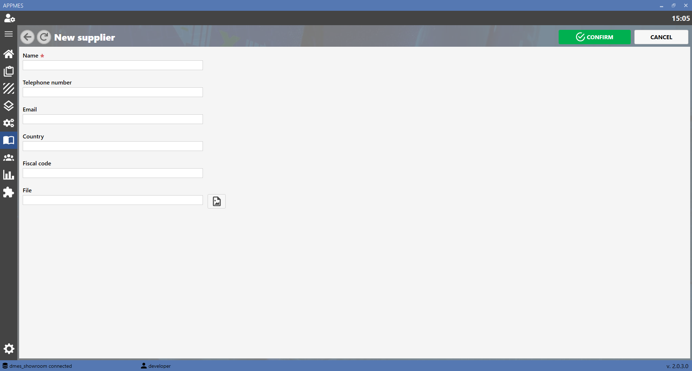
PULSANTI
 | AGGIUNGI |
MODIFICA Consente di aggiornare i dati di un fornitore già registrato nel MES. | |
 | COPIA Consente di duplicare la scheda di un fornitore già presente, così da creare un nuovo fornitore partendo da dati esistenti. |
 | ELIMINA Consente di rimuovere dal MES la scheda di un fornitore non più necessaria. |
 | IMMAGINI Consente di associare un’immagine di anteprima alla scheda fornitore durante la creazione o la modifica. |
CREAZIONE DI UN NUOVO FORNITORE
Per creare un nuovo fornitore, fare clic sul pulsante AGGIUNGI. Il MES apre una schermata in cui inserire i dati del fornitore.

DMES MATRIX permette di gestire slabs e blocchi
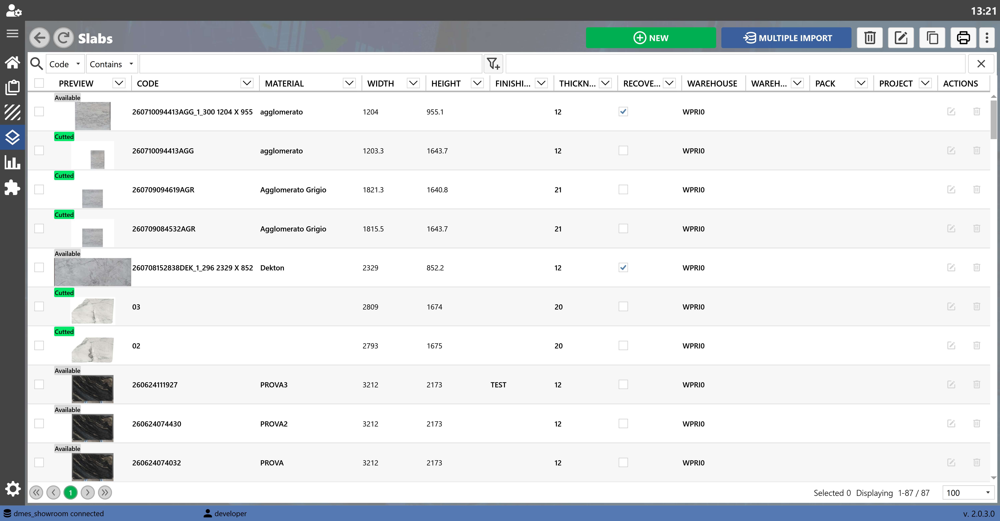
PULSANTI
 | CATEGORIA MATERIALI |
MATERIALI | |
COLORE MATERIALI |
Questa pagina del MES permette di cercare nel magazzino i materiali in base alla categoria a cui appartengono.
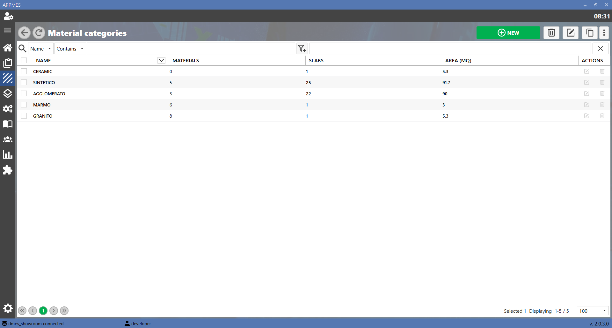
PULSANTI
 | AGGIUNGI |
-20260819-060407.png) | MODIFICA |
 | COPIA |
 | ELIMINA |
NUOVA CATEGORIA
Per aggiungere una nuova categoria di materiali, clicca su Aggiungi. Si apre una schermata in cui è possibile creare una categoria e associarla ai materiali non ancora classificati.
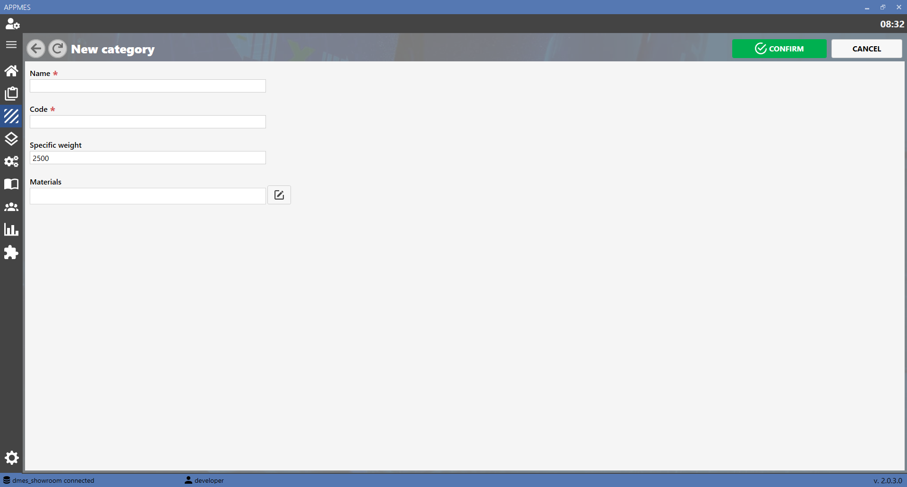
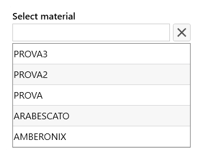
Questa pagina del MES permette di gestire i materiali presenti in magazzino. Per ogni materiale sono indicati categoria, dati principali e informazioni utili alla produzione.

PULSANTI
AGGIUNGI | |
FILTRI | |
-20260819-054922.png) | CONFERMA |
 | CANCELLA |
 | IMMAGINE DI ANTEPRIMA |
AGGIUNTA DEL MATERIALE
Per aggiungere un nuovo materiale, clicca su Aggiungi. Si apre una schermata in cui inserire nome, codice, valore, note, peso specifico, categoria, colore e immagine di anteprima.
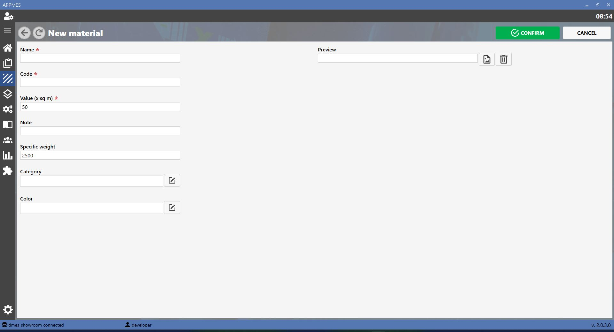
Questa pagina del MES permette di cercare nel magazzino i materiali in base al colore associato.
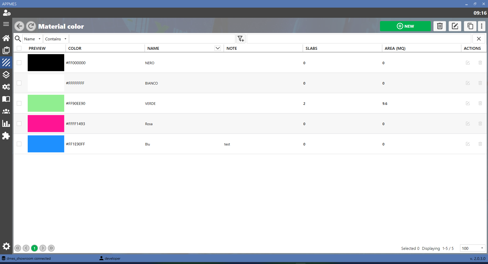
AGGIUNTA DI UN NUOVO COLORE
Per aggiungere un nuovo colore, clicca su Aggiungi. Si apre una schermata in cui inserire il nome del colore, scegliere una tonalità anche tra quelle predefinite e aggiungere eventuali note.
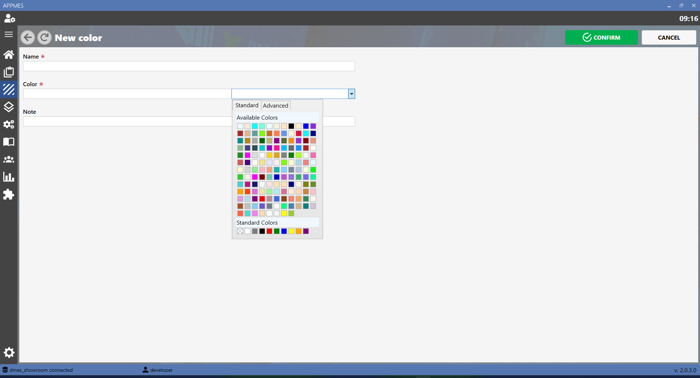
In questa pagina è possibile vedere e cercare blocchi e lastre
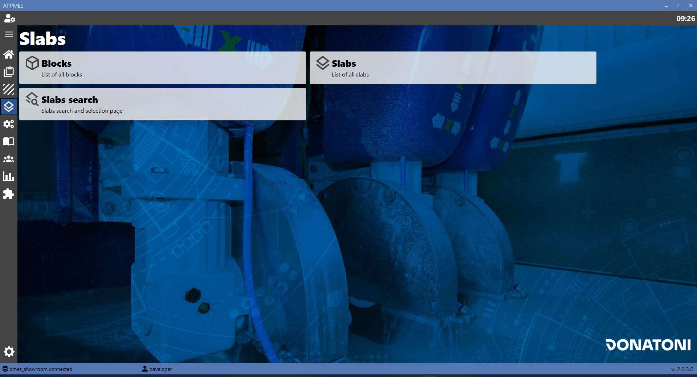
PULSANTI
 | BLOCCHI |
LASTRE | |
 | RICERCA LASTRE |
Questa pagina del MES permette di gestire i blocchi presenti in magazzino, cioè i materiali disponibili per la produzione.
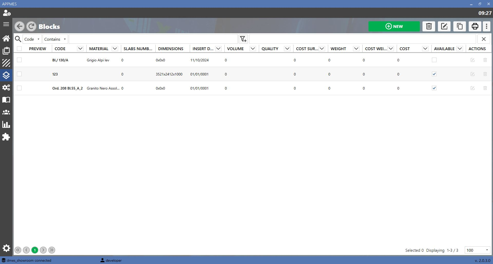
PULSANTI
 | PULSANTE AGGIUNGI |
-20260819-060407.png) | PULSANTE MODIFICA |
PULSANTE COPIA | |
 | PULSANTE ELIMINA |
 | PULSANTE STAMPA ETICHETTA |
AGGIUNTA NUOVO BLOCCO
Per aggiungere un nuovo blocco, clicca su Aggiungi. Si apre una schermata in cui inserire nome, codice, dimensioni e altre caratteristiche del blocco.
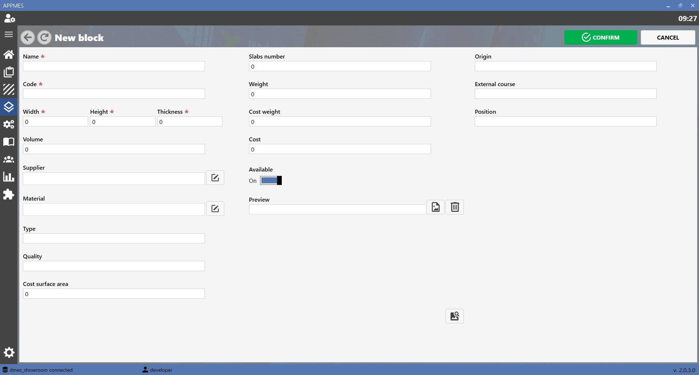
STAMPA ETICHETTA
Per stampare un'etichetta per un blocco, clicca su Stampa etichetta. Si apre una schermata in cui scegliere il modello, stampare l'etichetta oppure salvarla in PDF.
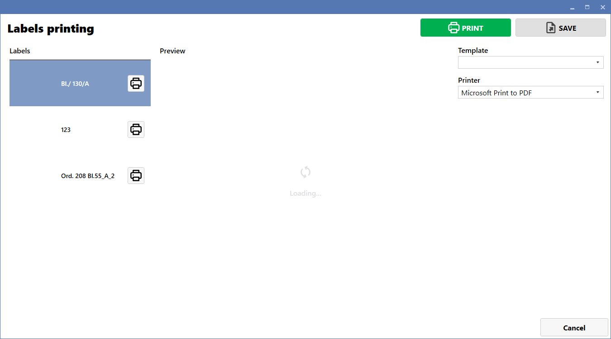
In questa pagina è possibile gestire le lastre del sistema MES. Una lastra è un materiale che può essere inserito, importato, assegnato a una commessa e seguito durante le varie fasi di lavorazione.
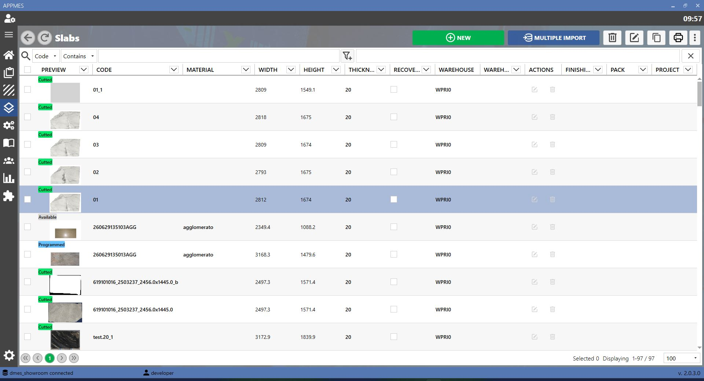
PULSANTI
 | Pulsante Aggiungi |
Pulsante Importazione multipla |
STATI
Stato Cutted | Indica che la lastra è stata tagliata. |
Stato Available | Indica che la lastra è disponibile e può essere utilizzata per una lavorazione. |
Stato In Programming | Indica che la lastra è in fase di programmazione per la lavorazione. |
Stato Job Assigned | Indica che la lastra è stata assegnata a una commessa. |
Stato Programmed | Indica che la lavorazione della lastra è stata pianificata. |
IMPORTAZIONE MULTIPLA
Per importare più lastre, selezionare il pulsante Importazione multipla. Il MES apre una schermata simile a quella mostrata sotto, dalla quale è possibile caricare più lastre nello stesso momento.

Questa pagina permette di fare una ricerca sulle lastre
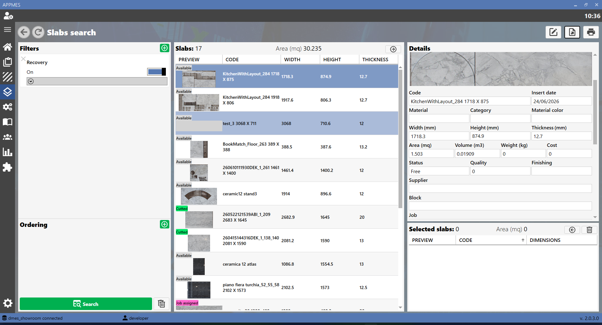
PULSANTI
 | CERCA |
ESPORTA |
ESPORTA ETICHETTA
Per esportare l’etichetta in pdf premere il pulsante esporta e si aprirà una schermata simile a questa, dove sarà possibile modifiche le informazioni da esportare e il formato del pdf che verrà esportato

DMES PRO garantisce il pieno controllo su tutte le funzionalità come lavorazioni, magazzino e visualizzazione delle statistiche

Per accedere a questa sezione, consultare i punti 4.1 e 4.1.1 del manuale.

Pulsanti di DMES PRO
In questa sezione sono descritti i principali pulsanti del MES DMES PRO. Questi pulsanti permettono di impostare i dati della lavorazione prima di procedere con l’esportazione.
 | Materiale |
Slabs | |
 | Spessore |
Esportazione |
Sezione Materiale
Premendo il pulsante Materiale si apre una schermata simile a quella mostrata di seguito. In questa schermata è possibile modificare il materiale associato alla lavorazione.
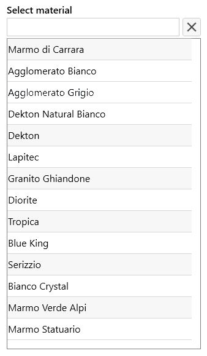
Sezione Slabs
Premendo il pulsante Slabs si apre una schermata simile a quella mostrata di seguito. In questa schermata è possibile scegliere la slab da lavorare.
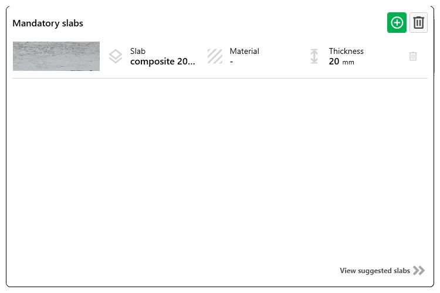
Sezione Spessore
Premendo il pulsante Spessore si apre una schermata simile a quella mostrata di seguito. In questa schermata è possibile indicare lo spessore della lastra o del materiale in lavorazione.

Esportazione della lavorazione
Per esportare la lavorazione, fare clic sul pulsante Esportazione. Si apre una schermata simile a quella mostrata di seguito. Da questa schermata è possibile modificare le informazioni da esportare e configurare le impostazioni del file di esportazione.
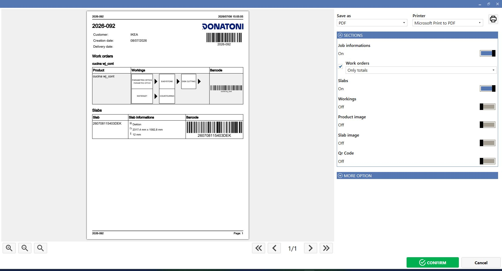
In questa pagina del MES è possibile gestire gli utenti, i gruppi di utenti, le attività e le attività in esecuzione. Queste funzioni servono a organizzare chi può usare il sistema, quali gruppi hanno accesso alle varie aree e quali attività operative devono essere configurate o monitorate durante il lavoro.
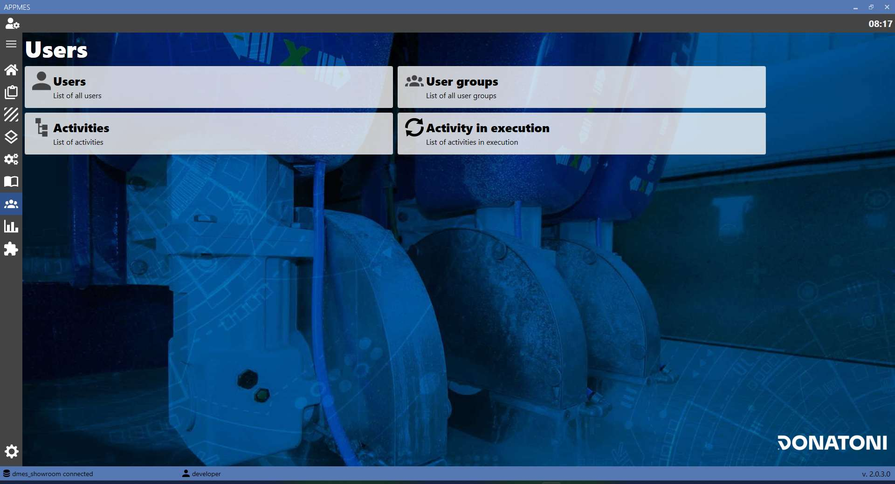
Pulsanti
Utenti | |
 | Gruppi di utenti |
Attività | |
Attività in esecuzione |
In questa pagina è possibile gestire gli utenti del MES. Un utente rappresenta una persona autorizzata ad accedere al sistema, ad esempio un operatore, un responsabile o un addetto alla produzione
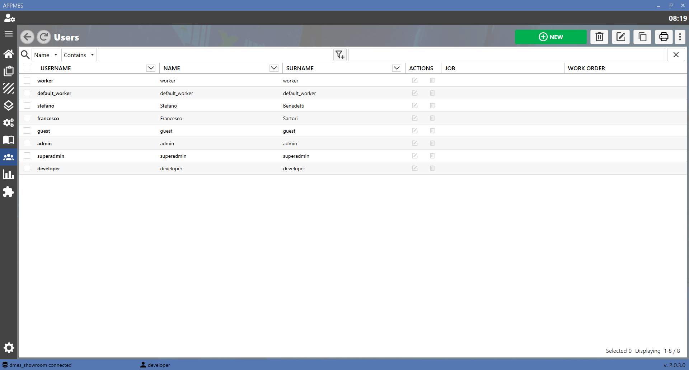
PULSANTI
 | AGGIUNGI |
-20260819-060407.png) | MODIFICA |
 | COPIA |
 | ELIMINA |
STAMPA |
CREAZIONE NUOVO UTENTE
Per creare un nuovo utente, premere il pulsante AGGIUNGI. Il MES aprirà una schermata di inserimento dati simile a quella mostrata di seguito. Compilare i campi richiesti e salvare le informazioni
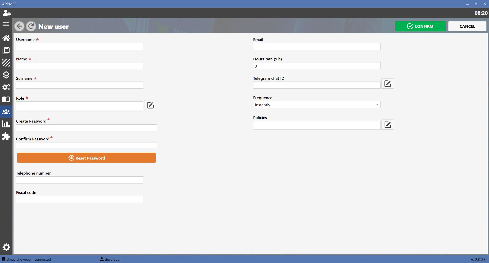
STAMPA ETICHETTA
Per stampare l’etichetta di un utente, premere il pulsante STAMPA. Il MES aprirà una schermata simile a quella mostrata di seguito. Selezionare l’utente per cui si vuole stampare l’etichetta e confermare la stampa
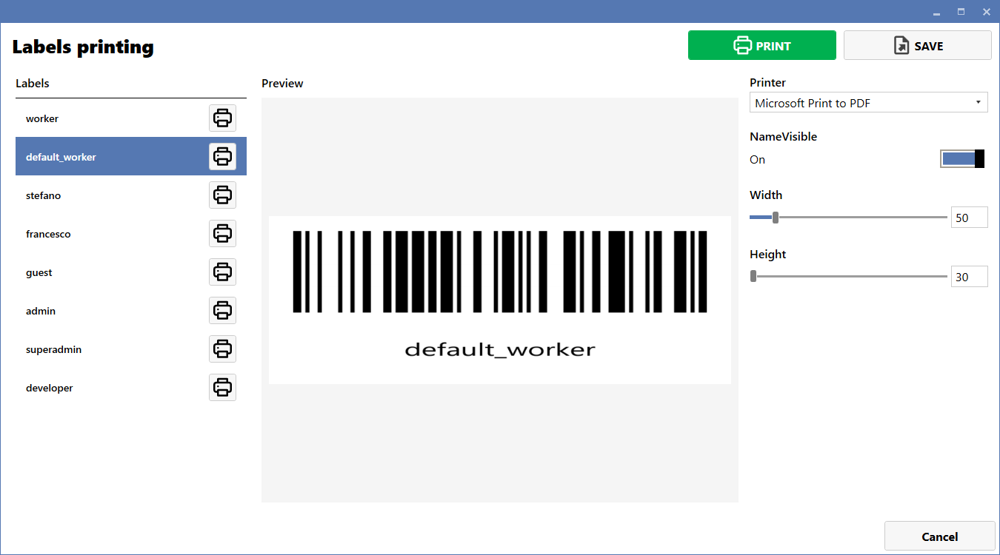
In questa pagina è possibile gestire i gruppi utente del MES. Un gruppo utente serve a riunire più utenti con le stesse funzioni o autorizzazioni, in modo da semplificare la gestione degli accessi e delle attività nel sistema.
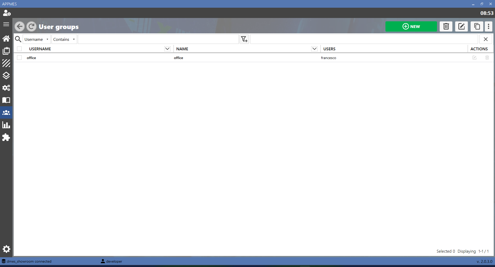
PULSANTI
 | AGGIUNGI |
-20260819-060407.png) | MODIFICA |
 | COPIA |
 | ELIMINA |
CREAZIONE NUOVO GRUPPO UTENTE
Per creare un nuovo gruppo utente, premere il pulsante AGGIUNGI. Si aprirà una schermata simile a quella mostrata di seguito. Inserire le informazioni richieste, come il nome del gruppo e le eventuali autorizzazioni, quindi salvare la configurazione.
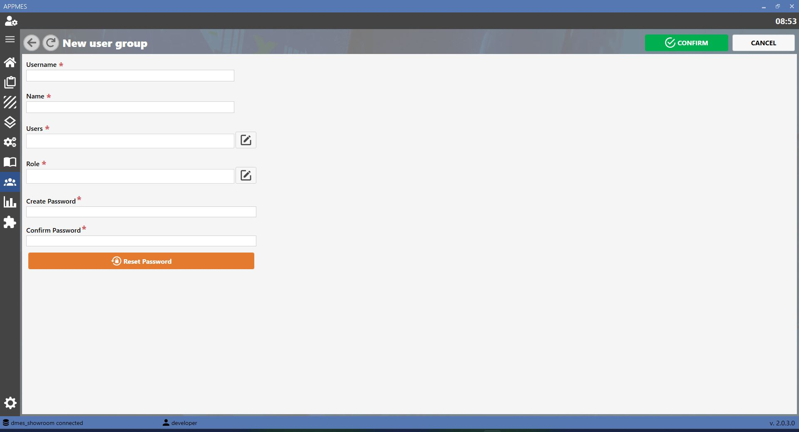
In questa pagina è possibile gestire le attività del MES. Un’attività rappresenta un’operazione o una fase di lavoro che deve essere eseguita, controllata o registrata durante il processo produttivo.

PULSANTI
 | AGGIUNGI |
-20260819-060407.png) | MODIFICA |
 | COPIA |
 | ELIMINA |
CREAZIONE NUOVA ATTIVITÀ
Per creare una nuova attività, premere il pulsante AGGIUNGI. Si aprirà una schermata simile a quella mostrata di seguito, nella quale sarà possibile inserire le informazioni richieste e salvare la nuova attività nel MES.

In questa pagina è possibile gestire le attività in esecuzione nel MES. Un’attività in esecuzione è una fase di lavoro già avviata in produzione: può essere avviata, messa in pausa, ripresa o completata in base allo stato reale del processo produttivo.
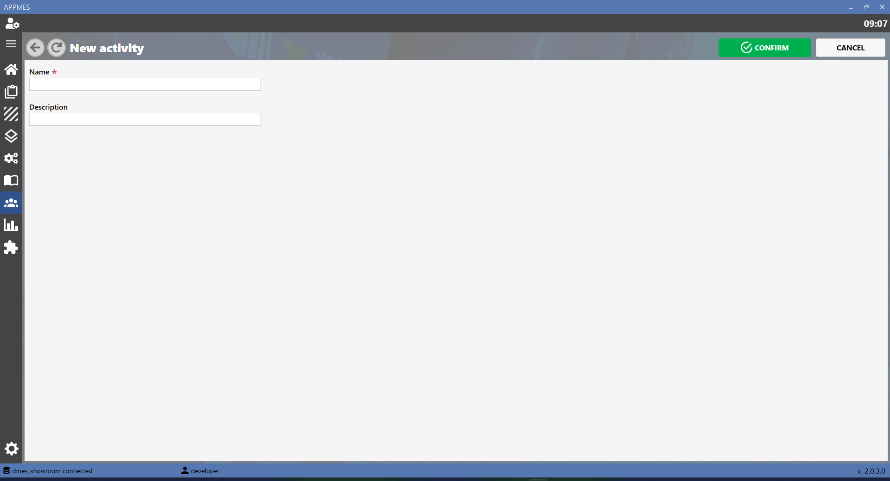
PULSANTI
 | AGGIUNGI |
 | MODIFICA |
 | COPIA |
 | ELIMINA |
PLAY |
CREAZIONE NUOVA ATTIVITA' IN ESECUZIONE
Per creare una nuova attività in esecuzione, premere il pulsante AGGIUNGI oppure selezionare l’apposita voce dal menu. Si aprirà una schermata simile a quella mostrata sotto, in cui sarà possibile inserire le informazioni richieste e confermare la creazione dell’attività.

AVVIO DI UN’ATTIVITÀ
Per avviare un’attività, selezionare l’attività interessata e premere il pulsante PLAY. Quando compare la finestra di conferma, premere OK. Da questo momento l’attività risulta avviata nel MES.

PAUSA DI UN’ATTIVITÀ
Per mettere in pausa un’attività, selezionare l’attività interessata e premere il pulsante PAUSA. Quando compare la finestra di conferma, premere OK. L’attività rimane registrata nel MES, ma risulta temporaneamente sospesa.
COMPLETAMENTO DI UN’ATTIVITÀ
Per segnare un’attività come completata, selezionare l’attività interessata e premere il pulsante di completamento. Quando compare la finestra di conferma, premere OK. Dopo la conferma, il MES registra l’attività come conclusa.

Questa pagina del MES permette di monitorare la produzione, gestire gli utenti e consultare le attività svolte. Il MES è il software utilizzato per seguire e organizzare le operazioni di produzione in modo semplice e controllato.

PULSANTI
PRODUZIONE | |
 | UTENTI |
 | ATTIVITÀ |
In questa pagina del MES è possibile gestire le fasi di produzione. Il MES è il software utilizzato per seguire e registrare le attività produttive, assegnare gli operatori e controllare l’avanzamento del lavoro in modo semplice e ordinato

Avvio di una fase di produzione
Per avviare una fase di produzione, premere il pulsante Play sulla fase desiderata. Nella schermata che si apre, selezionare l’utente che deve svolgere il lavoro e premere il pulsante di avvio per confermare

Avvio di un’attività
Per avviare un’attività, partire dalla sezione WORKINGS e selezionare ACTIVITIES in alto a destra. Si apre una schermata in cui è possibile indicare l’utente e l’attività da svolgere
In questa pagina è possibile vedere una lista completa degli utenti e in che compiti sono impegnati

PULSANTI
PAUSA |
In questa pagina è possibile vedere e gestire le diverse attività degli utenti

PULSANTI
 | PLAY |
 | PAUSA |
TERMINA |
In questa pagina è possibile configurare le impostazioni del MES. Le opzioni sono organizzate per area funzionale, così da rendere più semplice trovare e modificare i parametri necessari.
PULSANTI
 | Utente |
 | Applicazione |
 | Grafica |
 | Stampa etichette |
Contenuti | |
 | Macchina |
Importazione pezzi | |
Database | |
 | REST |
 | Tutte le impostazioni |